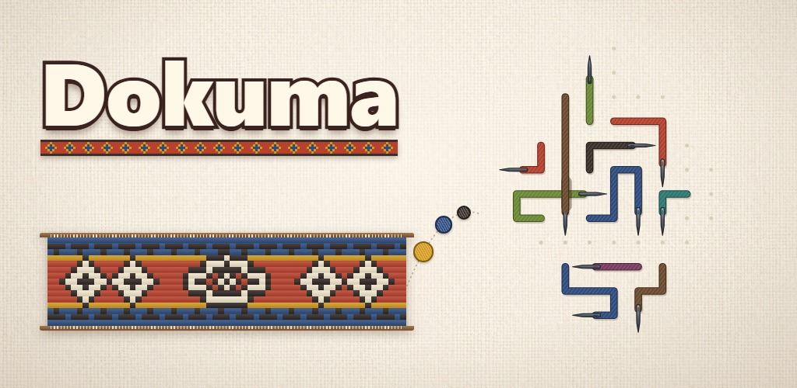

İpliği doğru sırayla çek, düğümleri çöz, her seviyede yeni bir kilim doku.
Yakında Google Play ve App Store'da.
Nasıl oynanır
- İpliğe dokun: önü açıksa kayarak çıkar ve yumak olup tezgâha gider.
- Önünde başka bir iplik varsa çıkamaz ve bir can gider.
- Düğümlerde iki iplik üst üste geçer: önce üstteki çıkar.
- Bağlı iki iplik birlikte çıkar; mühürlü iplik, aynı işaretli anahtar ipliği çekilmeden çıkamaz.
- Örtülü ipliğe değen bir ipliği çekince örtü kalkar; makara ipliğin yolunu döndürür.
- Çektiğin iplikler tezgâhta ilmek ilmek dokunur. Seviye bitince kilimin galerine girer.
- Uşak'tan Hakkari'ye sekiz kilim bölgesi, 400 seviye: yolculuk haritasında her bölgenin kendi boyaları ve kilimi var. Ardından usta tezgâhında seviyeler bitmez.
- Her gün yeni bir kilim; istersen akşamları kısa bir hatırlatma gelir. Oyun 11 dilde.
Destek
Bir sorun mu var, bir önerin mi? Yaz: mokur12345@gmail.com. Telefonunun modelini de yazarsan daha çabuk bakabilirim.
- İlerlemem nerede saklanıyor?
- Yalnız telefonunda. Uygulamayı silersen ilerlemen de silinir; başka bir telefona taşınmaz.
- Reklamlar ne zaman çıkıyor?
- Ödüllü reklamı yalnız sen istersen izlersin (can, makas ya da tarak için). Seviye aralarındaki reklamlar 11. seviyeden sonra ve toplam yarım saat oynadıktan sonra başlar, aralarında en az 90 saniye olur.
- Reklam izni seçimimi nasıl değiştiririm?
- Avrupa Ekonomik Alanı, Birleşik Krallık ve İsviçre'de: oyunda Ayarlar → "Reklam gizlilik seçenekleri".
- İnternetsiz oynanır mı?
- Evet. Yalnız reklamlar için internet gerekir; bağlantı yoksa ödüllü reklam açılmaz.